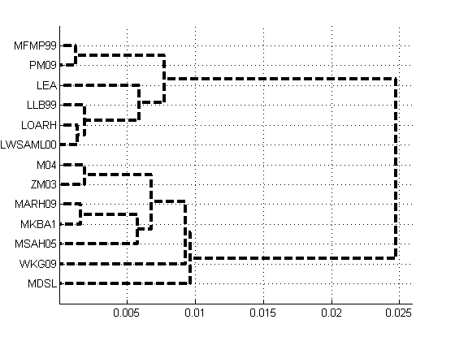
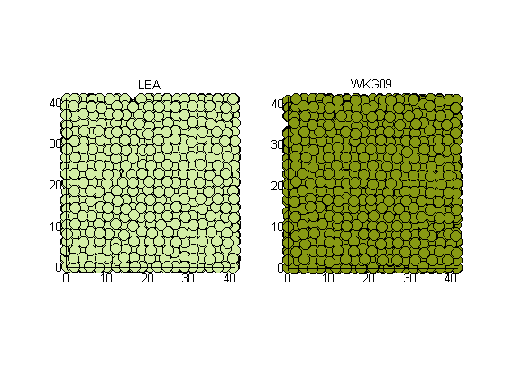

Principal Component Analysis of Spatial Statistics in Molecular Dynamics Simulations
This script uses spatial statistics calculations of molecular dyanmics simulations to Verify and Validate Molecular Potentials in the NIST potentials repo .
Contents
- Workflow
- Repo Functions used
- Notes
- Load Mark Tygert's Randomized PCA algorithm.
- Generate the datapages for each of the datasets in the repository
- Material Feature Indentification
- Create Data Matrix
- Pre-process data for analysis
- Principal Component Analysis
- Execute PCA
- Principal Component Embedding
- Cross-comparison of potentials
- Compute centroids
- Plot dendrogram
- PCA split comparison
Workflow
- Load shared data.
Repo Functions used
- Load2Matlab - Loads in the matlab data. The structure fields are description in this codes documentation.
- PlotMolecules - Uses the structured output from Load2Matlab to plot the positions of the atoms.
- CreateFeature - Converts the spatial statistics vector in a feature vector to be used in the principal component analysis tool.
- PCA - A randomized PCA algorithm downloaded from ryotat's Github repo . This function is downloaded automatically if it doesn't exist.
Notes
- Currently, the spatial statistics are imported from old codes. They will be shared soon, but the information is presentated as is.
Load Mark Tygert's Randomized PCA algorithm.
Spatial statistics provide a large number of features that are limiting to most PCA codes. I like this one and this script will download it.
if ~isdir( './pca/' ) mkdir('./pca'); urlwrite('https://raw.github.com/ryotat/dal/master/matlab/pca.m','./pca/pca.m') end addpath('./pca');
Generate the datapages for each of the datasets in the repository
Each dataset dataset contains raw simulation data, simulation parameters, and post-processed Spatial Statistics. Load2Mat describes the output structures.
% Repo location of the Matlab Data files data_dir = ['MAT']; % Files in the data directry ff = dir( data_dir ); ct = 0; for ii = 1 : numel( ff ); if ~all( ff(ii).name == '.' );
ct = ct + 1;
Use matinpublish to read in the datasets and publish the data pages for a subset of datum. When the webpages aren't generated the data is loaded in as normal. Either way output is constructed in both approaches.
It is cool to note that there is very little change in syntax between the appraoches.
if mod(ii-1,4) == 0 % publish output = matinpublish( @Load2Matlab, sprintf('%s%s%s', data_dir, filesep, ff(ii).name), 'title', out.name ); else % don't publish output = Load2Matlab( sprintf('%s%s%s', data_dir, filesep, ff(ii).name ),param ); end close all;
Material Feature Indentification
The feature indentification process preps the materials information to be digested by data analytics. The Data matrix (feature variable) is an N x D array where N indexes each datapoint and D indexes the features that each column represents.
In this application, each datapoint ( or row ) is identified by a Energy Potential Acronym (output.tags{1}) and the Step(output.Step) in the simulation that the datapoint was recorded for . The set { output.tags{1}, output.Step } uniquely map to an index for each row.
The columns correspond to vectors in the spatial statistics. The vector distance are exported by the CreateFeature function; feature.columns are the vector distances in the Pair Correlation that were extracted previously.
feature.cut has a hyperparameter of the cutoff distance which can be modulated in the function CreateFeature.
feature(ct) = CreateFeature( output );
end end
Create Data Matrix
% Transform labels to an array class = [ feature(:).label ]; % Give integer identifiers to the classes [~, classindex] = unique( class ); % Transform steps to an array step = [ feature(:).step ]; % Initialize the NxD data Matrix DM = zeros(numel( feature ), numel( feature(1).data ) ); % Add each row from the feature variable for ii = 1 : numel( feature ) DM( ii, : ) = feature(ii).data; end
Pre-process data for analysis
Remove bad features and selectively remove training data here. Remove classes from the analysis
ignoreclass = {'ZJW04','SBFT12','MMP02'}
% Remove null columns
br = ~ismember( class, ignoreclass );
ignoreclass =
'ZJW04' 'SBFT12' 'MMP02'
I had to add the row index because when the bias datasets are removed there are still nonzero columns. This indicates that much of the separation is a result of entries in sparse feature columns.
Principal Component Analysis
Principal Component Analysis is performed on the data matrix and the potentials included in the data matrix. The Principal Component Analysis finds the linear combination feature columns that exhibit the largest covariance.
b = any( DM(br,:) ~= 0,1 );
% Normalize the feature columns.
DMBIAS = bsxfun( @rdivide, DM(br,b), sqrt( sum( DM(br,b).^2,1)));
Execute PCA
[ U S V ] = pca( DMBIAS ); W =U*S;
Principal Component Embedding
co = rand( numel( plotclass), 3 );
for ss = 1 : numel( plotclass )
b = reindex == ss;
Change line style to make it easier to visually intrepet the classes.
if all( W(b,2) > 0 ) ls = 'k'; else ls = 'w'; end % hpca(ss) = plot3( W(b,1), W(b,2), W(b,3), [ls,'o'], ... 'Markersize', 16, 'MarkerfaceColor',co(ss,:)); if ss == 1 hold on; end end xlabel('PCA_1','Fontsize',13);ylabel('PCA_2','Fontsize',13);zlabel('PCA_3','Fontsize',13); text( centroids(:,1), centroids(:,2), centroids(:,3), plotclass,'Fontsize',15 ); grid on; axis square hold off legend( hpca, plotclass ); view(2); title( sprintf('Cutoff is %i nm',feature(end).cut) ) figure(gcf);
Cross-comparison of potentials
A dendrogram of the centroids of each potential in PCA embedding. The relative distnace of the potentials indicates a measure of similarity and dissimilarity between the models.
Compute centroids
plotclass = setdiff({class{classindex}},ignoreclass);
[~,reindex] = ismember( class(br), plotclass );
centroids = zeros( numel( plotclass), size( W,2) );
for ii = 1 : size(W,2)
centroids(:,ii) = accumarray( reindex(:), W( :,ii),[],@mean);
end
Plot dendrogram
distance = pdist( centroids ); z = linkage( distance ); h = dendrogram(z); set( gca, 'Xticklabel', [plotclass(str2num(get(gca,'Xticklabel')))] ); view( [90 90]); set(h,'LineWidth',3,'Color','k','LineStyle','--') grid on; figure(gcf);
PCA split comparison
In the initial data analytics there were outlying clusters in the PCA embedding. In this pass, those classes have been removed. The PCA embedding shows a clear clustering or separation of potentials. The potential models are near the Aluminum melting temperature. One can assume that the clusters in the PCA embedding correspond to a degree of melting or a degree of order. This is still up for interpretation.
The following two pictures show a projection of the atomistic positions for example datasets from each cluster. The colors correspond to class colors in the PCA embedding.
examples = {'LEA_11','WKG09_11'};
ct = 0;
% Copy the plot features from the pca analysis.
copyplotclass = {'Color','Markersize','MarkerFaceColor' };
for ii = examples
ct = ct + 1;
ex = Load2Matlab( fullfile( data_dir, sprintf( '%s.mat', ii{:} ) ),param );
[~,index] = ismember( ex.tags, plotclass );
subplot( 1,2,ct);
hmol = PlotMolecules( ex );
set( hmol, 'MarkerFaceColor', co( index,:))
title( ex.tags{1} )
view([0 0 ]);
end
figure(gcf)
